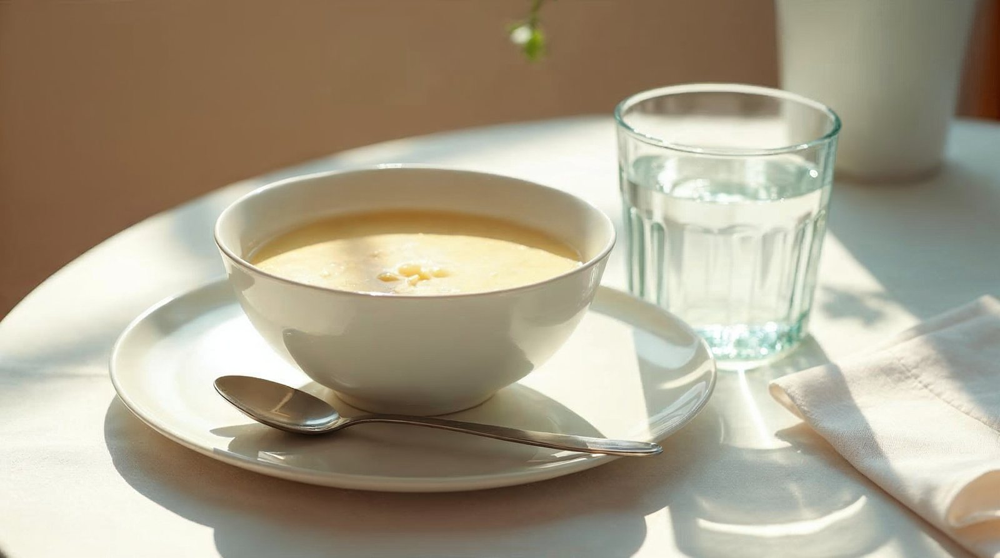
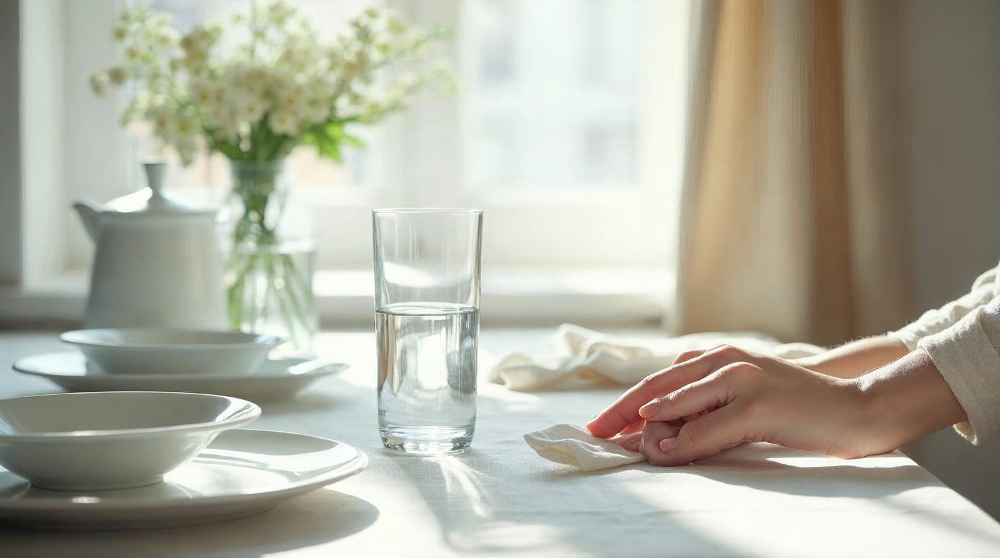
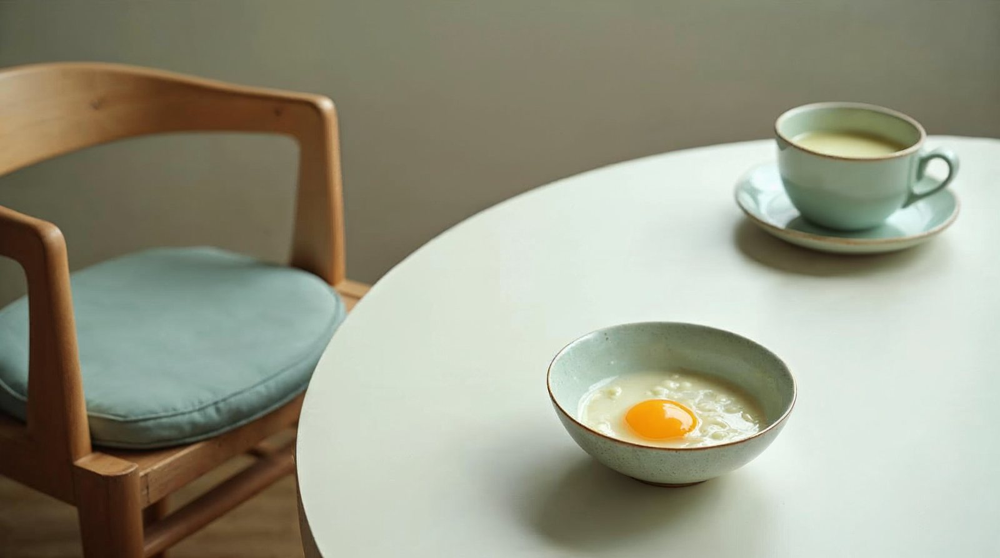
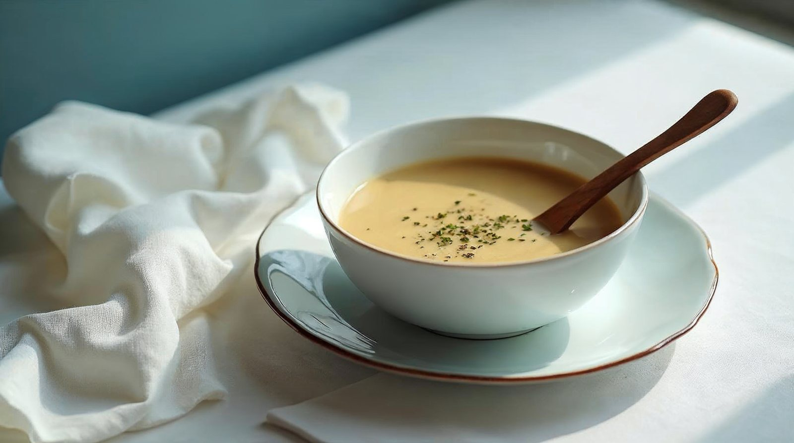
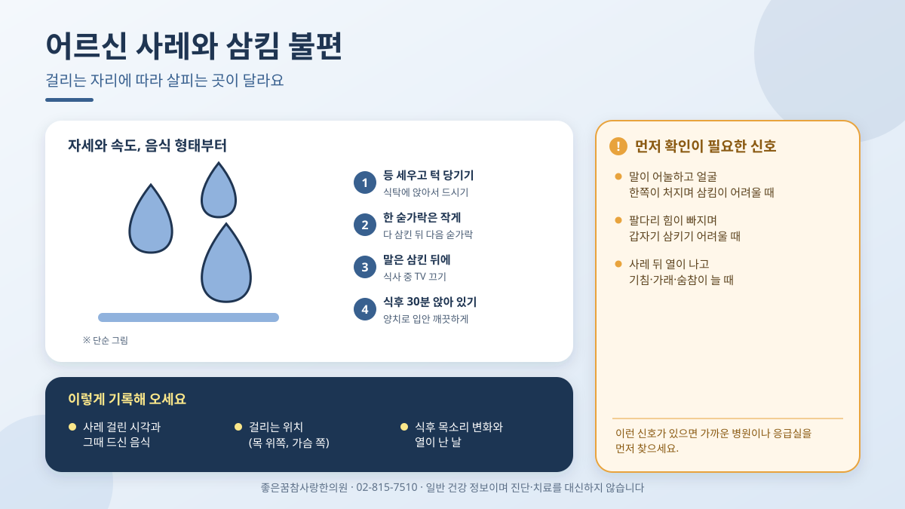

이종호 한의사 감수좋은꿈참사랑한의원 대표원장 (한의사 면허번호 19769)발행 2026-11-26 · 수정 2026-11-26
이 글의 차례
국을 한 숟가락 떠 드시다가 갑자기 콜록콜록 기침을 하십니다. 얼굴이 빨개지도록 한참을 기침하고 나서야 숨을 고르십니다. "괜찮다, 잘못 넘어갔다"고 웃으시지만 요즘 들어 이런 일이 부쩍 잦아졌습니다. 알약을 드실 때도 몇 번씩 물을 들이켜시고, 밥을 드신 뒤에는 목에 뭔가 남은 것 같다고 헛기침을 하십니다.
어르신의 사레는 가족이 먼저 걱정하시는 경우가 많습니다. 어르신 본인은 "나이 들면 다 그래"라며 대수롭지 않게 넘기시곤 합니다. 하지만 삼킴은 생각보다 섬세한 일이고, 삼킴이 흔들리면 식사량과 영양, 폐 건강까지 이어서 영향을 받습니다.
저는 이 이야기를 들으면 먼저 언제부터, 어떤 음식에서, 얼마나 자주 그러신지를 차근차근 여쭙니다. 서서히 조금씩 늘어난 것인지, 어느 날 갑자기 달라진 것인지에 따라 살펴볼 방향이 크게 달라지기 때문입니다.
이 글에서는 나이가 들며 삼킴이 왜 불편해지는지, 어떤 경우에 어느 과에서 먼저 확인해야 하는지, 식탁과 자세에서 무엇을 바꿔 볼 수 있는지를 차례로 정리했습니다. 한의원에서 할 수 있는 일과 그렇지 않은 일도 함께 솔직하게 말씀드리겠습니다.
사레는 왜 걸리는 걸까요?
음식을 삼킬 때 우리 몸은 아주 짧은 순간에 여러 일을 동시에 해냅니다. 혀가 음식을 목 뒤로 밀어 보내고, 숨길의 입구인 후두가 위로 올라가며 뚜껑이 닫히고, 음식은 식도로 넘어갑니다. 이 모든 일이 1초 남짓한 사이에 일어납니다.
사레는 이 순서가 조금 어긋나 음식이나 물이 숨길 쪽으로 들어갈 때 생깁니다. 숨길에 무언가 들어오면 몸은 기침으로 밀어내려 합니다. 그래서 사레가 걸리면 콜록콜록 기침이 나는 것이고, 이 기침은 몸을 지키는 반응입니다.
젊은 사람도 급하게 먹거나 말하며 먹으면 사레가 걸립니다. 하지만 사레가 잦아지고, 기침이 약해져 잘 밀어내지 못하게 되면 음식이 폐로 들어가 염증을 일으킬 수 있습니다. 어르신 사레를 가볍게 넘기지 않는 이유입니다.
왜 나이가 들면 삼킴이 불편해질까요
나이가 들면 혀와 목의 근육이 조금씩 약해집니다. 음식을 뒤로 밀어 보내는 힘이 줄고, 후두가 올라가는 높이와 속도도 느려집니다. 그래서 같은 음식을 삼켜도 예전보다 목에 조금씩 남거나 숨길 쪽으로 새기 쉬워집니다.
감각도 무뎌집니다. 목에 음식이 남아 있어도 잘 느끼지 못하고, 숨길에 무언가 들어와도 기침이 늦게 나옵니다. 침이 줄어 입이 마르면 음식을 뭉쳐 넘기기가 더 어려워집니다.
치아와 틀니의 문제로 잘 씹지 못하면 큰 덩어리를 그대로 삼키게 되어 목에 걸리기 쉽습니다. 일부 약은 입을 마르게 하거나 졸리게 해서 삼킴을 둔하게 만들기도 합니다.
뇌졸중을 앓으셨거나, 파킨슨병, 치매처럼 신경계 질환이 있으시면 삼킴이 더 크게 영향을 받습니다. 역류성 식도염이나 식도의 좁아짐처럼 식도 쪽 문제로 음식이 가슴에 걸리는 느낌이 드는 경우도 있습니다. 그래서 삼킴이 불편할 때는 원인을 나눠 보는 것이 무엇보다 중요합니다.
어디에 걸리는지에 따라 살피는 곳이 다릅니다
목 위쪽, 삼키는 그 순간에 사레가 걸리고 물이나 국물에서 특히 잘 걸린다면 입과 목의 삼킴 과정을 먼저 살핍니다. 이비인후과나 재활의학과에서 내시경이나 영상으로 삼키는 모습을 직접 보는 삼킴 검사를 받아 볼 수 있습니다.
삼킨 뒤 몇 초 지나 가슴 쪽에 음식이 걸려 내려가지 않는 느낌이 든다면 식도 쪽 문제를 먼저 생각합니다. 특히 밥이나 고기 같은 덩어리가 점점 더 잘 걸리고 체중이 빠진다면 소화기내과에서 내시경으로 확인해 보시길 권합니다.
음식을 먹지 않을 때도 목에 뭔가 걸린 듯 답답하고 헛기침이 나는데, 실제로 삼킬 때는 큰 불편이 없다면 목 이물감이나 후비루, 역류성 후두염 같은 다른 갈래를 생각합니다. 이 경우는 삼킴 자체의 문제와 나눠서 살핍니다.

스스로 살펴볼 수 있는 점
아래 질문에 답해 보시면 어느 쪽에 가까운지 짐작하는 데 도움이 됩니다. 가족이 곁에서 지켜본 것을 함께 적어 주셔도 좋습니다.
- 물이나 국물에서 사레가 더 잘 걸리나요, 밥이나 고기에서 더 잘 걸리나요?
- 걸리는 느낌이 목 위쪽인가요, 가슴 쪽인가요?
- 식사 뒤 목소리가 그르렁거리거나 젖은 소리처럼 변하나요?
- 식사 시간이 예전보다 길어졌나요?
- 최근 체중이 빠졌거나 열이 났던 적이 있나요?
- 알약을 삼키기 어려워 약을 거르는 일이 있나요?
식사 뒤 목소리가 젖은 듯 그르렁거린다면 목에 음식이 남아 있다는 신호일 수 있습니다. 이런 모습이 자주 보이면 삼킴 검사를 서둘러 받아 보시길 권합니다.
먼저 이렇게 여쭙니다
처음 오시면 저는 대략 이런 순서로 여쭙니다.
- 삼킴이 불편해진 것은 언제부터이고, 서서히 늘었나요, 갑자기 달라졌나요?
- 어떤 음식에서, 하루에 몇 번쯤 사레가 걸리나요?
- 폐렴이나 기관지염으로 치료받으신 적이 있나요?
- 뇌졸중, 파킨슨병, 치매 같은 진단을 받으신 적이 있나요?
- 드시는 약은 무엇이고, 알약을 삼키기 어렵지는 않으신가요?
- 이비인후과, 재활의학과, 소화기내과에서 검사를 받으셨나요?
이미 검사를 받으셨다면 결과지나 받으신 안내문을 가져와 주세요. 삼킴 재활 운동이나 음식 형태에 대한 안내를 받으셨다면 그 내용을 함께 지키는 것이 가장 먼저입니다.
일상에서 먼저 해 볼 수 있는 것
삼킴이 불편한 분께는 자세와 속도, 음식의 형태가 가장 큰 힘이 됩니다. 검사 결과에 따라 맞는 방법이 달라질 수 있으니, 받으신 안내가 있다면 그것을 먼저 따르시고 아래는 일반적인 내용으로 참고해 주세요.
- 등을 곧게 세우고 앉아서, 턱을 살짝 당긴 자세로 드시기
- 한 숟가락의 양을 작게, 꼭꼭 씹어 천천히
- 입안의 음식을 다 삼킨 뒤 다음 숟가락 뜨기
- 식사 중에는 텔레비전을 끄고 말은 삼킨 뒤에
- 식사 뒤 30분쯤은 바로 눕지 않고 앉아 계시기
- 식사 전후로 양치하고 입안을 깨끗하게
누워서 드시거나 고개를 뒤로 젖힌 채 물을 드시면 숨길 쪽으로 넘어가기 쉽습니다. 컵 대신 입구가 넓은 컵을 쓰시면 고개를 덜 젖히고 마실 수 있습니다. 빨대가 도움이 되는 분도, 오히려 사레가 늘어나는 분도 있어 검사 때 함께 여쭤보시길 권합니다.
음식은 너무 묽거나 너무 퍽퍽한 것보다 적당히 뭉쳐지는 것이 넘기기 쉽습니다. 맑은 국물보다 걸쭉한 죽이나 수프, 마른 빵보다 부드러운 계란찜이 넘기기 편한 경우가 많습니다. 물에 잘 걸리는 분은 약국이나 병원에서 안내받은 점도 증진제로 농도를 맞춰 드실 수 있습니다.
입안을 깨끗하게 유지하는 것도 중요합니다. 사레가 걸려 침이나 음식이 조금 숨길로 들어가더라도, 입안이 깨끗하면 폐에 주는 부담이 줄어듭니다. 틀니는 매일 빼서 닦고, 잠들기 전에는 꼭 양치를 챙겨 주세요.
삼키는 힘을 지키는 작은 습관
삼키는 근육도 몸의 다른 근육처럼 쓰지 않으면 약해집니다. 소리 내어 책을 읽거나 노래를 부르는 것, 가족과 자주 이야기를 나누는 것만으로도 입과 목의 근육을 움직이게 됩니다. 혼자 지내시며 말할 일이 적은 어르신일수록 이런 시간이 도움이 됩니다.
식사 전에 입을 크게 벌렸다 다물기, 혀를 앞으로 내밀었다 넣기, 볼을 부풀렸다 빼기를 몇 번씩 해 보시는 것도 좋습니다. 입 주변을 깨우는 가벼운 준비 운동입니다. 다만 삼킴 재활을 받고 계시다면 치료사가 알려 준 운동을 먼저 지켜 주세요.
삼킴에 대해 자주 헷갈리는 것
첫째, 사레가 걸려도 기침이 나니 괜찮다는 생각입니다. 기침은 몸을 지키는 반응이지만, 사레가 잦아지면 기침이 약해지고, 기침 없이 조용히 넘어가는 경우도 생깁니다. 사레가 잦다면 기침 여부와 상관없이 삼킴 검사를 받아 보시길 권합니다.
둘째, 죽만 드시면 안전하다는 생각입니다. 묽은 죽은 오히려 물처럼 흘러 사레가 잘 걸리기도 합니다. 어떤 농도가 맞는지는 사람마다 달라 검사로 확인하는 것이 가장 정확합니다. 그리고 죽만 드시면 영양이 모자라기 쉬우니 단백질을 보태 주셔야 합니다.
셋째, 알약이 잘 안 넘어가면 몇 개 건너뛰어도 된다는 생각입니다. 약을 거르시면 원래 치료가 흔들릴 수 있습니다. 알약을 삼키기 어렵다면 처방한 병원이나 약국에 알려 가루로 바꾸거나 다른 형태로 받을 수 있는지 상의해 보세요. 혼자 쪼개거나 갈지 마시고 먼저 여쭤보셔야 하는 약도 있습니다.

가족은 어떻게 도울 수 있을까요?
식사 시간에 곁에 함께 계셔 주시는 것만으로도 큰 도움이 됩니다. 혼자 드시는 식사는 빨라지거나 대충 넘기기 쉽기 때문입니다. 서두르지 않도록 천천히 드시게 하고, 사레가 걸리면 등을 세게 두드리기보다 스스로 기침해 밀어내실 수 있게 기다려 드리세요.
식사가 끝난 뒤 목소리가 젖은 듯 들리는지, 식사 시간이 점점 길어지는지, 드시는 양이 줄어드는지를 눈여겨봐 주세요. 이런 변화를 날짜와 함께 적어 두시면 검사를 받으실 때 큰 도움이 됩니다.
식탁 환경도 살펴 주세요. 의자는 발이 바닥에 닿고 등을 기댈 수 있는 것이 좋고, 식탁은 팔꿈치를 편하게 올릴 수 있는 높이가 좋습니다. 소파나 침대에 기대어 드시는 습관이 있으시다면 식사만큼은 식탁에서 하시도록 자리를 마련해 드리세요. 숟가락은 작고 얕은 것이 한 번에 드시는 양을 줄이는 데 도움이 됩니다.

한의원에서 함께 살필 수 있는 경우
- 삼킴 검사에서 큰 이상은 없다는데 목에 뭔가 걸린 듯한 느낌이 이어지는 경우
- 입이 자주 마르고 침이 줄어 음식을 넘기기 버거운 경우
- 속쓰림이나 신물이 함께 있고 식사 뒤 목이 칼칼한 경우
- 삼킴 재활을 받으며 기운과 입맛, 소화를 함께 살피고 싶은 경우
- 목과 어깨가 굳어 고개를 숙이고 드는 동작이 불편한 경우
좋은꿈참사랑한의원에 오시면 맥을 짚고 입안과 목, 소화의 흐름을 살핍니다. 그 내용을 바탕으로 침, 목과 어깨 주변의 긴장을 풀어 주는 관리, 한약 상담 가운데 지금 상태에 맞는 것을 진찰한 뒤 정합니다. 삼킴이 불편한 분께는 한약의 형태와 드시는 방법도 함께 살펴 신중하게 정합니다.
한의원 진료는 삼킴 검사와 재활을 대신하지 않습니다. 이비인후과, 재활의학과, 소화기내과에서 받는 확인과 안내가 먼저이고, 한의원은 그 사이의 몸 상태를 함께 살피는 자리라고 생각해 주시면 됩니다.
이렇게 기록해 오시면 상담이 쉬워집니다
2주 정도, 가족이 곁에서 보신 것을 간단히 적어 주세요.
- 사레가 걸린 시각과 그때 드시던 음식
- 걸리는 느낌의 위치(목 위쪽, 가슴 쪽)
- 식사에 걸린 시간과 드신 양
- 식사 뒤 목소리 변화, 기침, 가래
- 열이 났던 날과 체중
기록이 쌓이면 어떤 음식과 자세에서 사레가 잦은지, 하루 중 언제 더 힘드신지가 보입니다. 그 내용은 삼킴 검사를 하는 병원에서도 그대로 쓸 수 있는 소중한 자료가 됩니다. 휴대폰으로 식사하시는 모습을 짧게 찍어 두시면 말로 설명하기 어려운 부분을 보여 드리기도 쉽습니다.

한 숟가락을 편안하게
삼킴은 우리가 하루에도 수백 번 하면서 거의 의식하지 않는 일입니다. 그래서 불편해지면 식사 자체가 두려워지기도 합니다. 자세와 속도, 음식의 형태를 조금씩 맞춰 가면 식사가 다시 편안한 시간이 될 수 있습니다.
이번 주에는 등을 세우고 턱을 살짝 당겨 천천히 드시는 것 하나만 지켜 보세요. 사레가 잦다면 삼킴 검사부터 예약해 두시고, 다음에 오시면 그 결과와 기록을 함께 펼쳐 보겠습니다.
이런 증상은 먼저 확인이 필요합니다
- 갑자기 말이 어눌해지거나 얼굴 한쪽이 처지고 팔다리 힘이 빠지면서 삼키기 어려워진 경우
- 사레가 든 뒤 열이 나고 기침과 가래가 늘며 숨이 차는 경우
이런 신호가 있으면 한의원보다 가까운 병원이나 응급실을 먼저 찾으세요.
함께 읽으면 좋은 글
- 어르신이 기운이 없고 자꾸 눕고만 싶어 하실 때는 무엇을 살피나요?
- 속쓰림은 별로 없는데 목이 칼칼하고 헛기침이 이어지는 역류성 후두염은 어떻게 살피나요?
- 콧물이 목 뒤로 넘어가 자꾸 헛기침이 나는 후비루는 왜 생기고 어떻게 살피나요?
- 입맛이 없고 밥이 잘 넘어가지 않는 성인 식욕부진은 어떻게 살피나요?
- 깜빡하는 일이 부쩍 늘어 경도인지장애나 치매가 걱정될 때는 무엇부터 살피나요?

여쭙는 것
- 삼킴이 불편해진 것은 언제부터이고, 서서히 늘었나요, 갑자기 달라졌나요?
- 어떤 음식에서, 하루에 몇 번쯤 사레가 걸리나요?
- 폐렴이나 기관지염으로 치료받으신 적이 있나요?
생활에서 해 볼 것
- 등을 곧게 세우고 앉아서, 턱을 살짝 당긴 자세로 드시기
- 한 숟가락의 양을 작게, 꼭꼭 씹어 천천히
- 입안의 음식을 다 삼킨 뒤 다음 숟가락 뜨기
한의원에서 함께 살필 것
- 삼킴 검사에서 큰 이상은 없다는데 목에 뭔가 걸린 듯한 느낌이 이어지는 경우
- 입이 자주 마르고 침이 줄어 음식을 넘기기 버거운 경우
- 속쓰림이나 신물이 함께 있고 식사 뒤 목이 칼칼한 경우
먼저 확인이 필요한 신호
- 갑자기 말이 어눌해지거나 얼굴 한쪽이 처지고 팔다리 힘이 빠지면서 삼키기 어려워진 경우
- 사레가 든 뒤 열이 나고 기침과 가래가 늘며 숨이 차는 경우
한눈에 보는 표
| 구분 | 핵심 |
|---|---|
| 여쭙는 것 | 삼킴이 불편해진 것은 언제부터이고, 서서히 늘었나요, 갑자기 달라졌나요? 어떤 음식에서, 하루에 몇 번쯤 사레가 걸리나요? |
| 생활에서 해 볼 것 | 등을 곧게 세우고 앉아서, 턱을 살짝 당긴 자세로 드시기 한 숟가락의 양을 작게, 꼭꼭 씹어 천천히 |
| 한의원에서 함께 살필 것 | 삼킴 검사에서 큰 이상은 없다는데 목에 뭔가 걸린 듯한 느낌이 이어지는 경우 입이 자주 마르고 침이 줄어 음식을 넘기기 버거운 경우 |
| 먼저 확인이 필요한 신호 | 갑자기 말이 어눌해지거나 얼굴 한쪽이 처지고 팔다리 힘이 빠지면서 삼키기 어려워진 경우 사레가 든 뒤 열이 나고 기침과 가래가 늘며 숨이 차는 경우 |
자주 묻는 질문
사레가 자주 걸리는 건 나이 탓인가요?
나이가 들며 삼키는 힘과 감각이 줄어드는 부분이 있습니다. 다만 사레가 잦아지면 폐에 부담이 생길 수 있어 이비인후과나 재활의학과에서 삼킴 검사를 받아 보시길 권합니다.
삼킴 검사는 어디서 받나요?
이비인후과나 재활의학과에서 내시경이나 영상으로 삼키는 모습을 확인하는 검사를 받을 수 있습니다. 가슴 쪽에 걸리는 느낌이라면 소화기내과 내시경을 먼저 권합니다.
알약이 잘 안 넘어가는데 어떻게 하나요?
혼자 쪼개거나 갈지 마시고 처방한 병원이나 약국에 먼저 알려 주세요. 형태를 바꿀 수 있는 약인지 확인한 뒤 방법을 안내받으실 수 있습니다.
한약도 삼키기 어려운데 괜찮을까요?
삼킴 상태를 먼저 확인하고, 드시는 형태와 방법을 함께 살펴 신중하게 정합니다. 드시는 약도 모두 확인합니다.
좋은꿈참사랑한의원은 재진 때 지난번 이야기부터 이어서 여쭙니다. 진료시간과 예약은 오시는 길에서 확인하세요.
어디서 상담받을 수 있나요?
좋은꿈참사랑한의원은 서울 동작구 만양로2길 2 신성빌딩 3층·5층(서울 동작구 상도동, 7호선 상도역 3번 출구 근처)에 있습니다. 한의사 3명(이종호 대표원장, 조영기 수석진료원장, 정원영 진료원장)이 진료합니다. 진료시간은 평일 09:30~20:00(점심 13:00~14:00), 토·일·공휴일 09:30~15:00이며, 방문 전 전화로 확인을 권합니다. 예약은 네이버 예약, 카카오톡 상담, 전화 02-815-7510로 받습니다.
이 글은 일반적인 건강 정보이며 개인의 진단이나 치료를 대신하지 않습니다. 증상이 있거나 복용 중인 약이 있다면 진료를 통해 확인하세요. 치료 효과는 개인마다 다를 수 있습니다.
작성 기준: 일반적으로 알려져 있는 건강 정보를 참고해 정리했습니다(대표원장 감수). 증상 기록은 1~2주 동안 하루 1회, 비슷한 시간에 적어 오시면 지난 상태와 비교하기 쉽습니다.